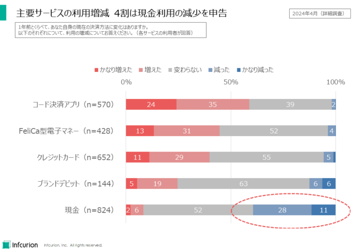
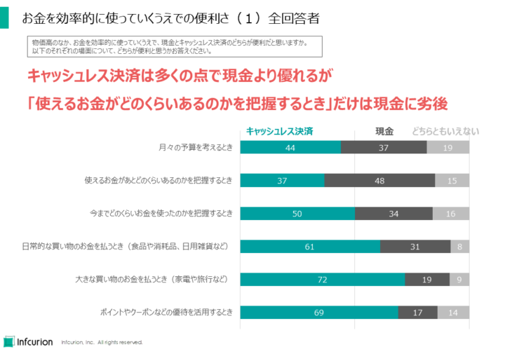
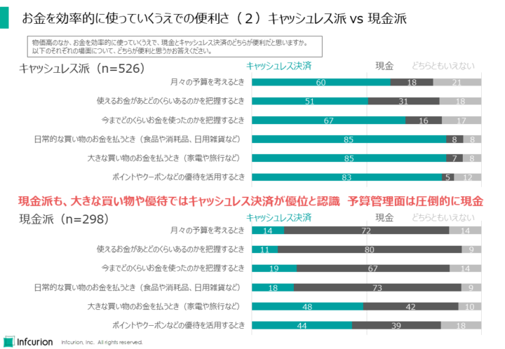
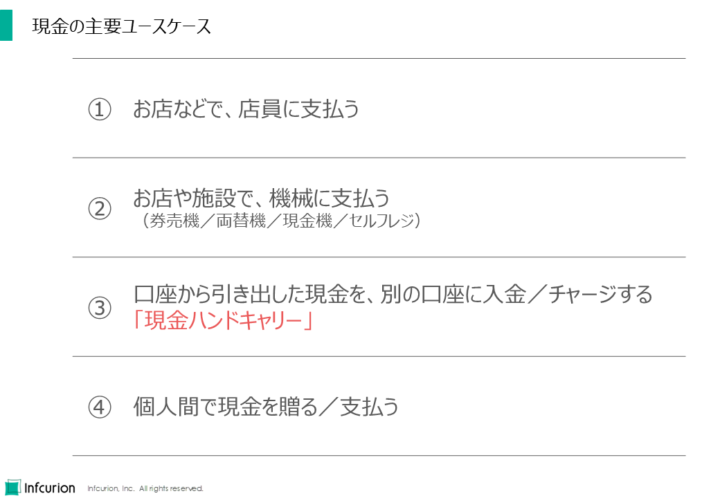
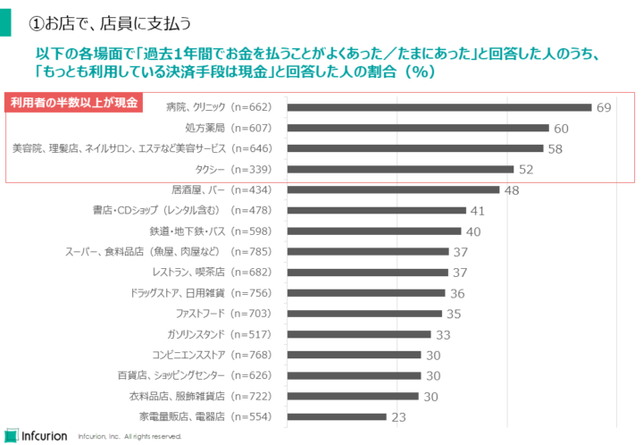
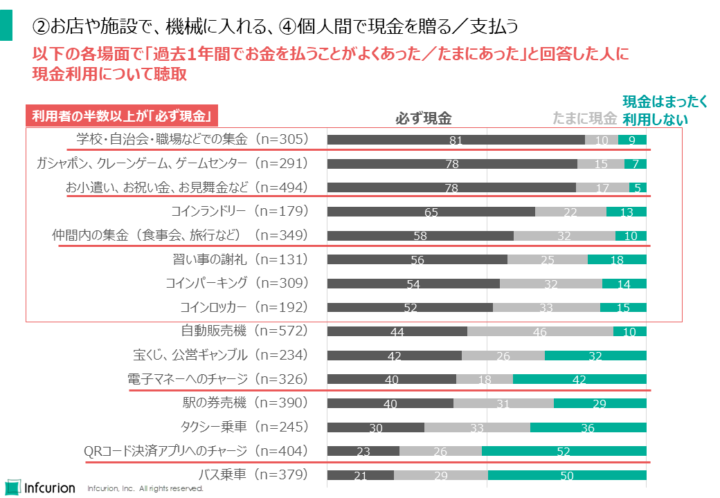
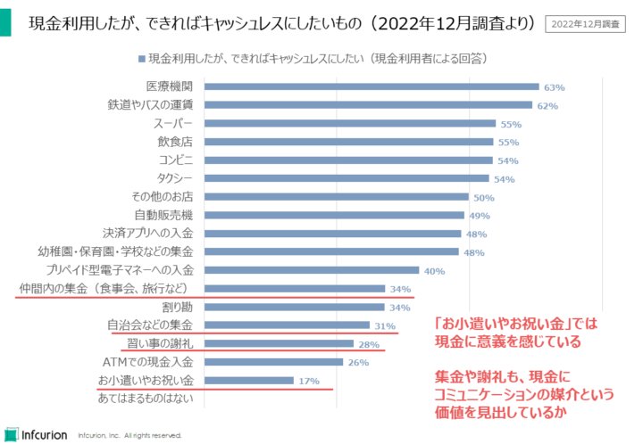
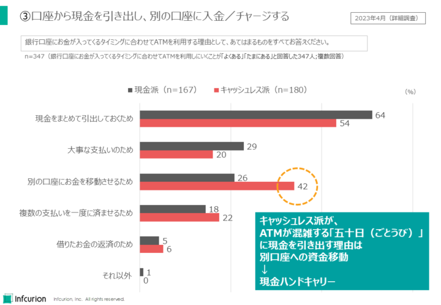
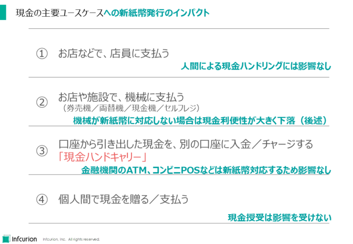

2024年7月4日、日本で新紙幣が発行されます。今回の新紙幣発行はこれまでと大きく異なる社会環境下で行われます。キャッシュレス化が広く普及しているだけでなく、現金機やセルフレジなど現金を取り扱う機械も日常に浸透しています。新紙幣発行で、消費者と現金の関わり方はどう変わっていくのでしょうか。われわれインフキュリオンの「決済動向2024年上期調査」のデータを用いて、現金利用の実態と新紙幣発行のインパクトを詳しく見ていきます。
2024年7月4日、日本で新紙幣が発行されます。今回の新紙幣発行はこれまでと大きく異なる社会環境下で行われます。キャッシュレス化が広く普及しているだけでなく、現金機やセルフレジなど現金を取り扱う機械も日常に浸透しています。新紙幣発行で、消費者と現金の関わり方はどう変わっていくのでしょうか。われわれインフキュリオンの「決済動向2024年上期調査」のデータを用いて、現金利用の実態と新紙幣発行のインパクトを詳しく見ていきます。
コード決済利用の増加、現金利用の減少
まず日本の消費者824人に、1年前と比べた決済方法の変化について聞いた結果が図1です。コード決済アプリでは約6割が利用増を申告しており、コード決済の拡大がここでも確認できますが、興味深いのは現金利用。約4割は利用が減少したと回答しています。前回記事（「増え続ける『キャッシュレス派』の消費者」）では「キャッシュレス派」を自認する消費者が増大し65%に達したことを紹介しましたが、こちらでも現金利用の減少とキャッシュレス決済利用の増加が観測できています。

図1 主要サービスの利用増減 4割が現金利用の減少を申告
キャッシュレスと現金、それぞれの優位性
現金利用が減少傾向とはいえ、「現金派」を自認する消費者はまだ35%もいます。前回記事で述べたとおり、現金派の人もキャッシュレス決済は利用しており、その便利さやポイント等のお得感は体験済ですが、それでも現金をメインの支払い手段として選択しているのです。
それでは、消費者からみたキャッシュレス決済と現金それぞれの優位点はどのようなものなのでしょうか。2023年調査に続いて、今回も選択形式で聴取した結果が図2です。６つの場面についてキャッシュレス決済と現金のどちらのほうが便利かを回答してもらったものです。

図2 お金を効率的に使っていくうえでの便利さ（１）全回答者
「キャッシュレス決済のほうが便利」という回答が「現金のほうが便利」を上回っていたのは
- 月々の予算を考えるとき
- 今までどのくらいお金を使ったのかを把握するとき
- 日常的な買い物のお金を払うとき
- 大きな買い物のお金を払うとき
- ポイントやクーポンなどの優待を活用するとき
の５つの場面でした。
興味深いことに、「使えるお金があとどのくらいあるのかを確認するとき」では現金のほうが便利と思う人が48%で、キャッシュレス決済のほうが便利と思う人を上回っているのです。回答者824人のうち現金派は35%しかいません。ということは、キャッシュレス派のなかにも、ここで現金を選択した人が少なからずいるということになります。
様々な便利さを持つキャッシュレス決済ですが、「使えるお金があとどのくらいあるのかを確認する」という点では現金に劣ると思われていることになります。
同じ回答データを、キャッシュレス派と現金派に分けて集計した結果を図3に示します。

図3 お金を効率的に使っていくうえでの便利さ（２）キャッシュレス派vs現金派
全ての場面において、キャッシュレス派の半数以上が「キャッシュレス決済のほうが便利」と回答していますが、「使えるお金があとどのくらいあるのかを把握するとき」はかろうじて半数を超えた51%。キャッシュレス派の31%はここで現金と回答しています。やはりここがキャッシュレス決済の弱点と言えるでしょう。
面白いことに現金派は、「大きな買い物のお金を支払うとき」と「ポイントやクーポンなどの優待を活用するとき」についてはキャッシュレス決済のほうが便利と答えた人が多数派です。決済利便性とお得感ではキャッシュレス決済の優位を認めているといえるでしょう。
しかし現金派は、それ以外の場面では現金のほうが便利と答える人が圧倒的多数です。現金派をキャッシュレス派に転換していくには、決済利便性やポイントのお得感だけでなく、「お金を効率的に使ううえでのサポートの充実」が求められているといえるでしょう。
現金の主要ユースケース
新紙幣は現金です。新紙幣発行が現金利用にどのようなインパクトを与えるのかを考えるために、まずは現金がどのように利用されているのかを見ていきます。図4に、現金の主な使われ方を4つ挙げます。

図4 現金の主要ユースケース
４つの主要ユースケースとは、
- お店などで、店員に支払う
- お店や施設で、機械に支払う（券売機／両替機／現金機／セルフレジ）
- 口座から引き出した現金を、別の口座に入金／チャージする（「現金ハンドキャリー」）
- 個人間で現金を贈る／支払う
です。これらのユースケースについて、利用実態をデータで見ていきます。
「現金ハンドキャリー」は、こちらの記事にあった「ATMをまたぐ『現金のハンドキャリー』」という表現が由来です。
- 川越洋、「多頻度小口決済「ことら」が目指すオールジャパンの送金基盤」、週刊金融財政事情 2024年4月2日号
①お店で、店員に支払う
図5には、16の業種のお店や施設の利用者のうち、「もっとも利用している決済手段は現金」と回答した人の割合を、降順で示したグラフです。
利用者の半数以上が現金をもっとも利用している業種が４つありました：
- 病院、クリニック
- 処方薬局
- 美容サービス
- タクシー

図5 ユースケース①お店で、店員に支払う
②お店や施設で機械に入れる、④個人間で現金を贈る
図6は、16業種以外の場面での現金利用状況を聴取したものです。過去1年間でお金を払うことがあった場面について、「必ず現金」、「たまに現金」、「現金はまったく利用しない」のいずれかを選択してもらった結果です。
機械にお金を入れる場面としては、ゲームセンター・コインランドリー・コインパーキング・コインロッカーで利用者の半数以上が「必ず現金」と回答しました。
個人間のやりとりでは以下の場面で半数以上が「必ず現金」でした：
- 学校・自治会・職場などでの集金
- お小遣い、お祝い金、お見舞金など
- 仲間内の集金
- 習い事の謝礼

図6 ユースケース②お店や施設で、機械に入れる、④個人間で現金を贈る／支払う
興味深いことに、個人間での現金のやりとりについては、現金のままにしておきたいという心理もあるようです。図7に、「現金利用したが、できればキャッシュレスにしたいもの」についての2022年12月の調査結果を示します。

図7 現金利用したが、できればキャッシュレスにしたいもの（2022年12月調査より）
医療機関での支払いやバス運賃などはキャッシュレス化したい人が6割を超えています。注目したいのはグラフの下のほう。「お小遣いやお祝い金」をキャッシュレス化したいという人は17%しかいません。「習い事の謝礼」、「自治会などの集金」、「仲間内の集金」など個人間のやりとりについても、キャッシュレス化したい人は利用者の3人に1人程度です。
個人間の現金のやりとりは、単なるお金のやりとりではなく、コミュニケーションであると考えられます。現金にコミュニケーションの媒介という価値を見出していると考えると、現金のままでよいという考えにも合理性があるように思われます。こうしたユースケースをキャッシュレス化するには、金銭授受のコミュニケーション的な側面まで考慮する必要があるように思われます。
③口座から現金を引き出し、別の口座にチャージする
ATMから現金を引き出し、それを別口座に入金／チャージする。いわゆる「現金ハンドキャリー」もよく行われているようです。振込や送金サービスを利用すれば済むのですが、手数料や口座連携などがネックとなって、「現金を運搬するほうが楽」となるようです。
図8は2023年上期調査のデータです。「銀行口座にお金が入ってくるタイミングに合わせてATMを利用する理由」について聴取した結果を示しています。
銀行口座にお金が入ってくる日といえば、日付に5や10が入っているいわゆる「五十日（ごとうび）」で、ATMは混雑し行列ができることも珍しくありません。そんな混雑する日にわざわざATMを利用しに行くのはなぜでしょうか。

図8 ユースケース③口座から現金を引き出し、別の口座に入金／チャージする
現金派・キャッシュレス派とも、トップとなったのは「現金をまとめて引出しておくため」でしたが、これは特に意外なところはありません。
意外だったのは「別の口座にお金を移動させるため」という選択肢。キャッシュレス派の42%がこれを選択しました。現金派ではこれを選択した人は26%でしたので、現金派との差異も鮮明です。
キャッシュレス派は、買い物では主にキャッシュレス決済を利用しています。そんなキャッシュレス派でも、五十日にはわざわざATMで現金を引き出し、それを別口座に入金したりチャージしたりしている行動が観測できたのです。
日本のキャッシュレス化を推進するうえで中心となってきたのは「現金での買い物をどうやってキャッシュレスに転換するか」でした。コード決済の拡大などで買い物シーンのキャッシュレス化は飛躍的に進みましたが、図8からはキャッシュレス派もわざわざ現金ハンドキャリーで口座間の資金移動をしている実態が浮かび上がります。日本のさらなるキャッシュレス化のためには、買い物シーンのキャッシュレス化だけでなく、口座間をお金が自由に動ける環境づくりも重要であることが示唆されています。
新紙幣発行のインパクト
キャッシュレス化が進む中での現金利用の実態についてこれまで見てきました。それでは、新紙幣の発行は消費者の決済行動にどのような影響を及ぼすと考えられるでしょうか。
注目すべき要因のひとつは、ATM・券売機・両替機・現金機・セルフレジ等による新紙幣対応の状況です。金融機関や大手事業者は既に対応を完了していると思われますが、中小事業者のなかには機器の更新費用の負担が重く、新紙幣対応が遅れるところも多いようです。
現金利用者が「新紙幣を受け入れない機械」に直面したとき、現金の利便性は大きく損なわれます。当該施設の利用を避けるようになる、またはキャッシュレス決済に転向する、といった対応を消費者に促すことになります。
もちろん、こうした作用は過去の紙幣発行でもあったはずですが、今回の社会環境は大きく異なっています。省力化の観点から現金を取り扱う機械が広く普及しているため、現金取扱機による新紙幣対応の重要度が増しています。また、現金の代替としてのキャッシュレス決済やデジタル送金も浸透しています。新紙幣が利用しにくければ、比較的容易に紙幣以外の方法を利用できるのが今の日本なのです。
新紙幣発行のインパクトを図9にまとめます：

図9 現金の主要ユースケースへの新紙幣発行のインパクト
人間同士でのやりとりでは、新紙幣だろうが旧紙幣だろうがインパクトはありません。金融機関のATMやコンビニPOSでも影響はないでしょう。
もし国内の現金取扱機が一斉に対応を完了するならば、新紙幣発行は消費者の決済動向に影響しないと思われます。しかし実際には機械の対応にはタイムラグが生じます。紙幣の利便性が低下し、キャッシュレス決済の利用が促進される可能性があります。
新紙幣発行は、キャッシュレス化のマイナス要因になることはなく、ニュートラル要因またはプラス要因になると考えれます。


{kind=link}
{kind=link}
{kind=link}
{kind=link}
{kind=link}
{kind=link}
{kind=link}
{kind=link}
{kind=link}